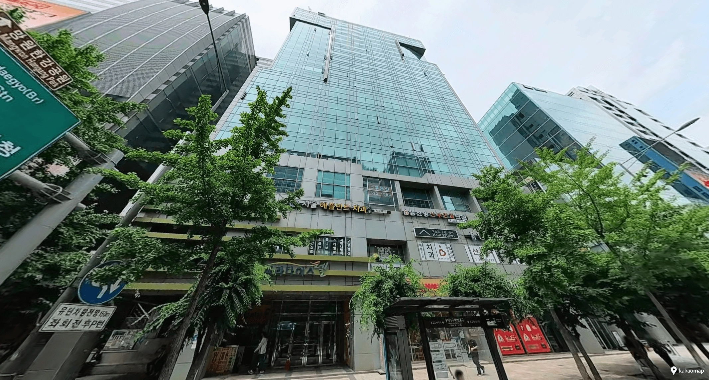

Untuk 6 orang — Dekat Hongik Univ Station
JSM Studio Hongdae
Satu apartemen penuh · pilihan dupleks hingga 6 orang · dapur · mesin cuci · lift
Untuk rombongan enam orang yang ingin tetap bersama di pusat Hongdae, JSM Studio adalah pilihan bergaya apartemen yang praktis tepat di dekat Hongik University Station. Pilihan dupleks bisa menampung hingga enam tamu, sementara dapur, mesin cuci, dan lift memudahkan keluarga yang membawa bagasi atau menginap beberapa hari. Ini apartemen yang dikelola secara pribadi, bukan hotel dengan layanan lengkap, sehingga check-in dan layanan di lokasi berbeda dari hotel konvensional.
